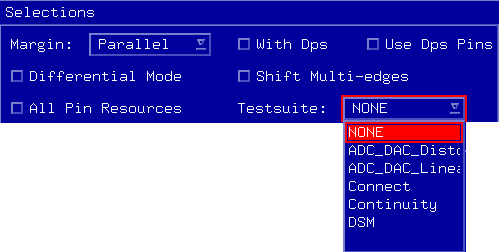

Testsuite list
The Testsuite list shows all the test suites in the loaded testflow. You can run a test suite from this list to get the result of the pin margin test. If you select NONE, a functional test using the primary set selected in the Pin Margin Tool is executed.

Functional changes
- Introduced in SmarTest 6.5.2